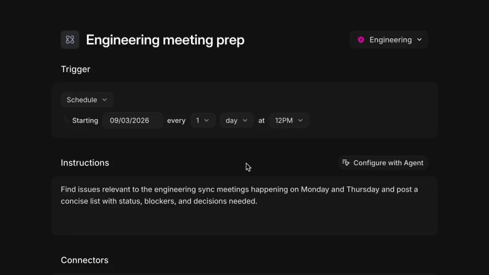
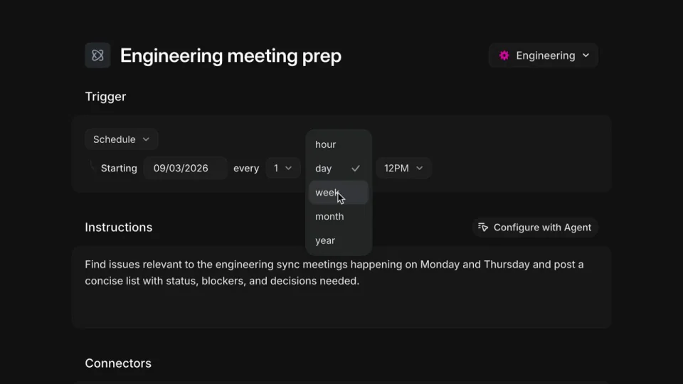
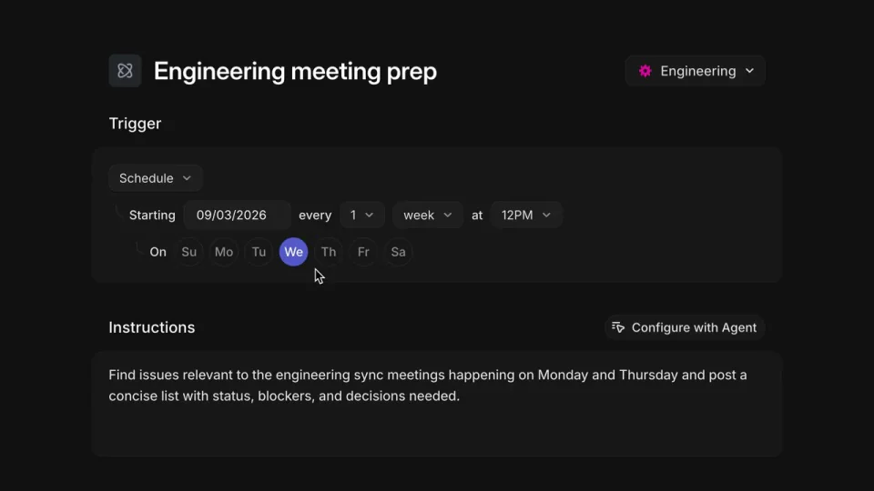
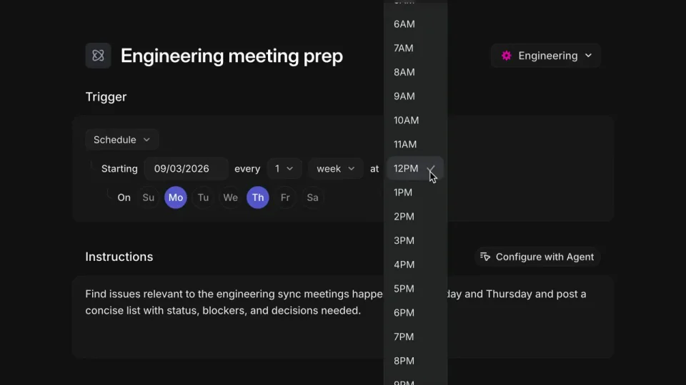
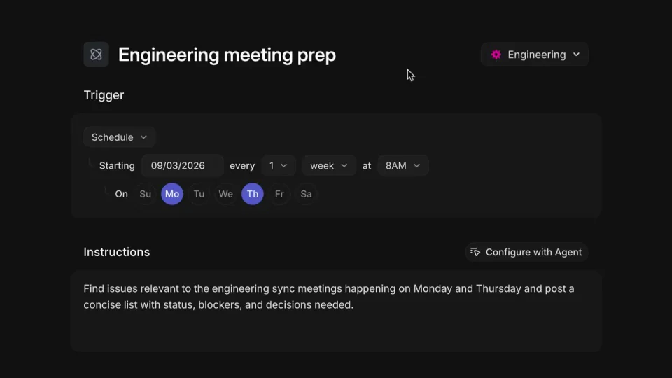

Linear / V113
Loops 能按星期跑
一次设置依次确定周期、星期和时间，最后用自然语言确认结果。重点是表单状态的持续与组合。
构图与编排 可播放 · 可替换内容
整体编排规则示例
查看 HTML 源码
<!doctype html><html lang="zh-CN"><meta charset="utf-8"><meta name="viewport" content="width=device-width,initial-scale=1"><title>Loops 能按星期跑 · sequence</title><style>html,body{margin:0;width:100%;height:100%;overflow:hidden;background:#090a0c}canvas{display:block;width:100%;height:100%;object-fit:contain}</style><body data-mode="sequence"><canvas width="1000" height="600"></canvas><script src="data.js"></script><script src="common.js"></script><script src="scene.js"></script><script src="bridge.js"></script></body></html>画面元素任务父容器周期菜单星期按钮时间菜单启用状态
MOTION LANGUAGE
动作与构图
局部动作 · 构图规则
01
选了周期，再出现对应日期选项
选了周期，再出现对应日期选项规则示例
查看 HTML 源码
<!doctype html><html lang="zh-CN"><meta charset="utf-8"><meta name="viewport" content="width=device-width,initial-scale=1"><title>Loops 能按星期跑 · sequence</title><style>html,body{margin:0;width:100%;height:100%;overflow:hidden;background:#090a0c}canvas{display:block;width:100%;height:100%;object-fit:contain}</style><body data-mode="clip" data-start="2" data-end="12"><canvas width="1000" height="600"></canvas><script src="data.js"></script><script src="common.js"></script><script src="scene.js"></script><script src="bridge.js"></script></body></html>先打开周期菜单并选周周期，再展示星期多选。已选星期持续高亮，新增选择不清掉已有项；时间菜单在日期确定后进入。
02
保存总览把规则读成一句话
保存后收起设置面板，用一句自然语言概括周期、星期和时刻。摘要使用与控件一致的值，任务名称仍保留在父容器内，说明这些设置属于哪项工作。
| 控件 | 摘要需要承接的信息 |
|---|---|
| 周期 | 每隔多少周 |
| 星期集合 | 选择哪些工作日 |
| 时间 | 具体时刻 |
| 启用状态 | 规则是否生效 |
03
深色表单中只强调选择
暗灰面板、浅色无衬线文字与冷紫选中态组成界面。星期按钮等距排布，菜单靠近触发控件；任务标题略重于字段，选择颜色不要被背景装饰重复使用。
04
更换任务时保留设置依赖
可改成报告、提醒或例行检查。任务名称、频率、日期和最终摘要一起更新；若改成每日或每月，日期控件也应随周期变化。
SEQUENCE
段落与节奏
点击段落，定位到上方编排示意。





画面参考 · 离散静帧
KEEP THE RELATIONSHIPS
制作其他主题
- 可换定时任务；保留周期→日期集合→时刻→摘要。
制作约束
任务父容器 / 周期菜单 / 星期按钮 / 时间菜单 / 启用状态
- 先选周周期，才显示星期多选，再设时间；完成后总览用自然语言总结规则。
- 已选星期必须持续高亮，不能当普通装饰圆点。